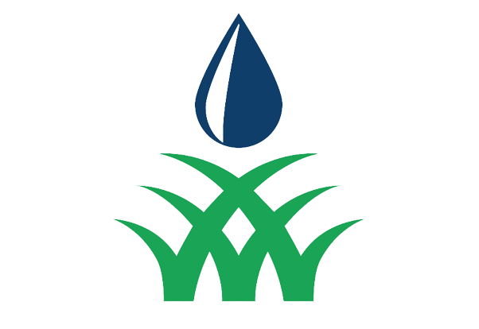

LA VIDA DE LA PLANTA A SOLO UN BOTON
Unas de los mejores proyector seria que cada usuario o cualquiera pueda regar ectareas de
de plantas para ello necesitamos el futuro de la programacion y la robotica
para un destino del mundo mas aprovechado ya que podria savar a miles de especies y al ser
humano como tal